Identifikasi penulis dari satu baris tulisan
Unggah satu baris tulisan tangan, lalu ResNet18 membandingkannya dengan 50 penulis terdaftar dan menyebut yang teratas beserta angka keyakinannya.
- Penulis terdaftar
- 50
- Crop latih
- 2.658
- Gambar uji
- 532
- Akurasi
- 0,9850
Daftar gambar dan penulis yang dijawab
Kolom kiri memuat gambar yang sudah dijalankan: potongan barisnya, kode penulis yang dijawab, dan keyakinannya. Kolom kanan membuka satu gambar: lima kandidat teratas dan peta bagian yang dibaca model.
Coba dengan gambar sendiri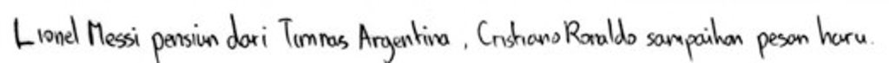
A240089A240089/3.jpgDibuka99,7%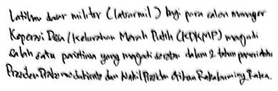
A220199A220199/1.jpgDibuka99,6%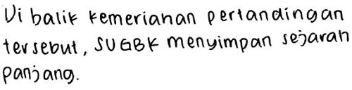
A250023A250023/3.jpgDibuka99,5%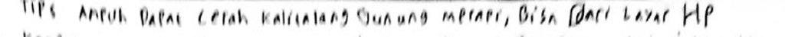
A240029A240029/1.jpgDibuka99,4%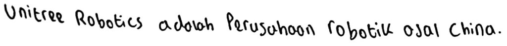
A240037A240037/1.jpgDibuka99,8%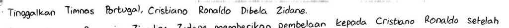
A250001A250001/1.jpgSelesai99,7%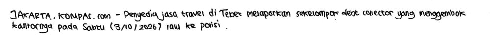
A250003A250003/1.jpgSelesai99,7%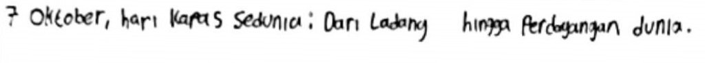
A250009A250009/1.jpgSelesai99,6%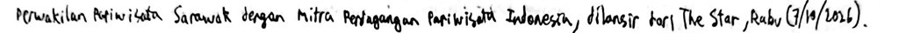
A250038A250038/1.jpgSelesai99,8%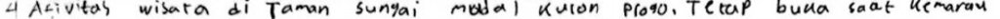
A250040A250040/1.jpgSelesai100,0%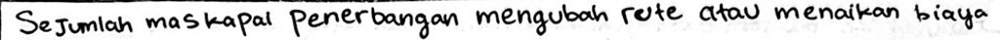
A250042A250042/1.jpgSelesai99,6%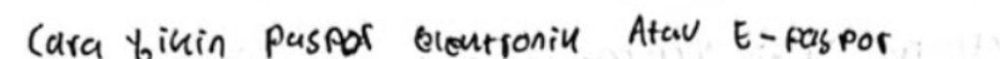
A240008A240008/1.jpgSelesai99,98%
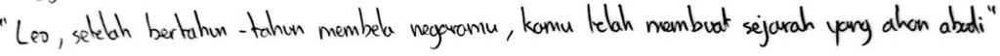
Tiga langkah dari gambar ke penulis
-
Menolak tulisan yang tak terbaca
Rasio tinta, ketajaman, dan kontras diukur lebih dulu. Batasnya diambil dari 2.658 gambar dataset, bukan dikira-kira.
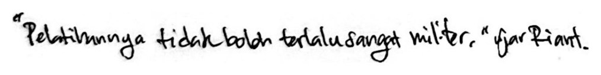
-
Menempel ke kanvas 128 x 1024
Tingginya dijadikan 128 piksel dengan rasio tetap, sisa kanvas diisi putih. Satu piksel berbeda di sini sudah mengubah tebakan.
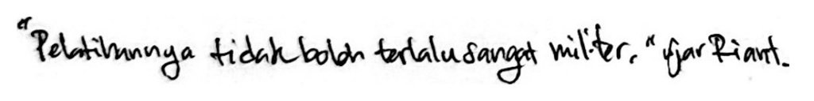
-
Membagi peluang ke 50 penulis
ResNet18 memberi satu peluang per penulis. Grad-CAM menandai bagian baris yang paling menentukan tebakan itu.
Empat model pada 532 gambar uji
Rata-rata lima eksperimen 5-fold pada 532 gambar yang tidak pernah dilatihkan. Bobot halaman ini fold 1 ResNet18 di CPU: akurasi 0,9850, F1 0,9848.
- ResNet18
F1 0,9807 · 316 detik satu fold
0,9808 - SqueezeNet 1.1
F1 0,9391 · 249 detik satu fold
0,9398 - LDA + GLCM
F1 0,8930 · 0,07 detik satu fold
0,8944 - Gaussian NB + GLCM
F1 0,2983 · 0,004 detik satu fold
0,3338
Dari mana 2.658 crop itu
Tiap penulis menulis beberapa baris, lalu tiap baris dipotong jadi satu gambar. Potongannya panjang dan rendah, jadi yang dilihat model adalah bentuk huruf dan jarak antarkata, bukan kata yang tertulis.
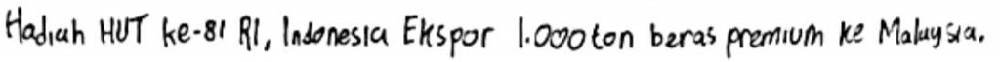
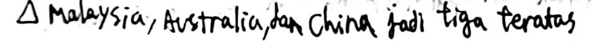
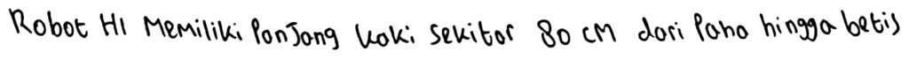
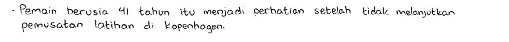
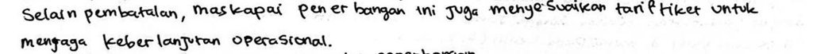
Hanya 50 penulis ini
Model memilih di antara 50 penulis yang dilatihkan. Tulisan orang lain tetap dipaksa masuk ke salah satunya.
Di bawah ambang 0,4023 jawabannya jadi “tidak dikenal”. Pada 532 gambar uji, ambang itu menahan 10 gambar dan menyaring 4 dari 8 prediksi yang salah.
- Recall terendahA250040, 0,820
- Isi tulisantidak dibaca
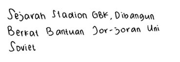